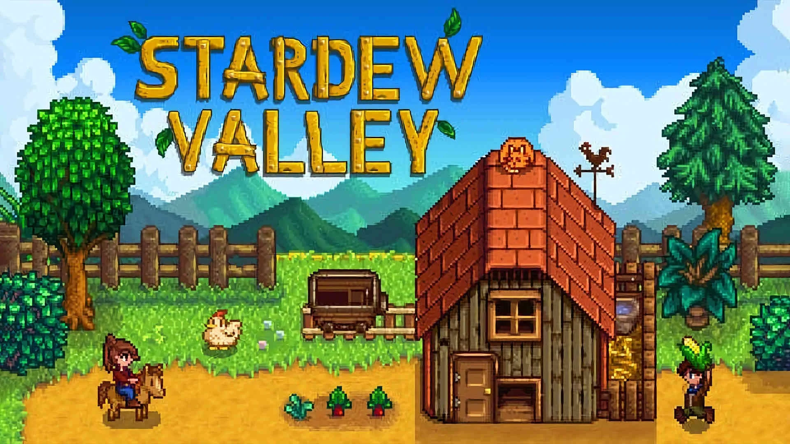

Creador del juego:ConcernedApe
Stardew Valley es un juego relajante sin final, que permite al jugador cumplir el juego de manera no lineal.
Me gusta este juego para relajarme y desconectar de los problemas de la vida real. Mi intención inicial al crear esta guía era facilitar a más gente la búsqueda de gúis de juegos.
